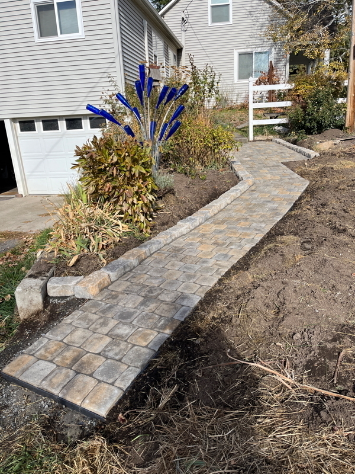

]]
]]Mac or PC laptop?

I think this is a no-brainer for most people reading this. I used a PC for my entire working career. The professional software I used for many of those years didn’t run on Macs. Later, when I moved on to open source software alternatives, it still worked better on PCs than Macs.
I retired several years ago, and my old PC laptop gave out not long after. Digitally, I have been doing more consumption than creation. I’ve had an iPhone for years in large part to stay compatible with my wife (who just wants her tech to work with minimal involvement on her part). I bought an iPad after I retired, and that has been my primary digital device. The iPad is great for reading and watching, but frustrating to type more than a short email. I’ll save my experiences with the Apple Pencil for a future post. I do have a nice Windows 10 desktop, but it is older and Microsoft has deemed it unworthy for upgrade. Support for Windows 10 is slated to end later this year.
So why do I want a laptop? I’m looking to dust off the web development and python skills I used to have. As a former data science person I would like to investigate the promises and perils of AI on my own. If nothing else I would like to compare notes on this with my grandkids.
I feel like I could do my development work on either platform. I do think that Microsoft’s vision for AI Is more developed than Apple’s. I’ve been satisfied with my Apple devices and will continue to use them. It is tempting to stay within Apple’s ecosystem. It is also clearly the environment of choice within the Micro.blog community where I spend a lot of time these days. It would be nice to be able to relate to the tech posts there.
On the other hand I have 40 years of satisfied experience with Windows (and earlier DOS).
I think it will come down to a snap decision on the day I order.
Replacing this old half-buried sidewalk has been on my todo list for years. Nice weather this month finally allowed me to finish it.
Before:
After:
This is a test post to palousegeo-test blog.
This is a block quote which I haven’t used before. This is the second line of the blockquote.


Ms. Bean will often come find me when I am working in my study upstairs. Sometimes my wife will send her up to get me for some chore, but often she just comes up to see me. She demands an ear rub and then lies on the floor until I am finished.


Finished reading: The Pub Across the Pond by Mary Carter 📚 This is a fun light Irish romance. It’s not my usual genre, but I enjoyed it.

Finished reading: Year of Wonder: Classical Music to Enjoy Day by Day by Clemency Burton-Hill 📚
My wife and I used this book to guide our listening each day after dinner. Be aware you need an account with Apple Music or Spotify to access the playlists.